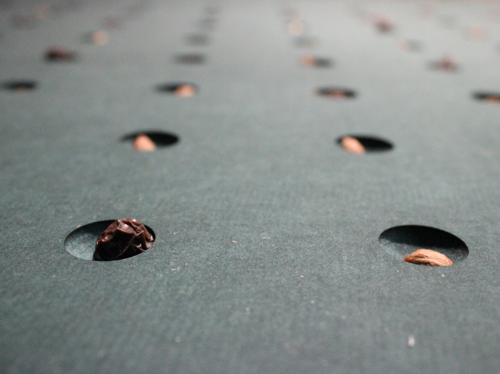
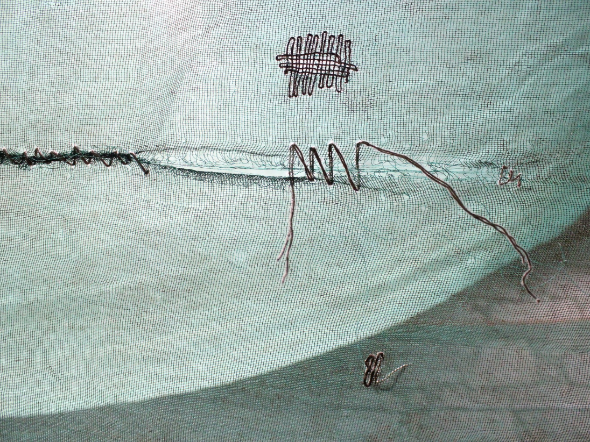
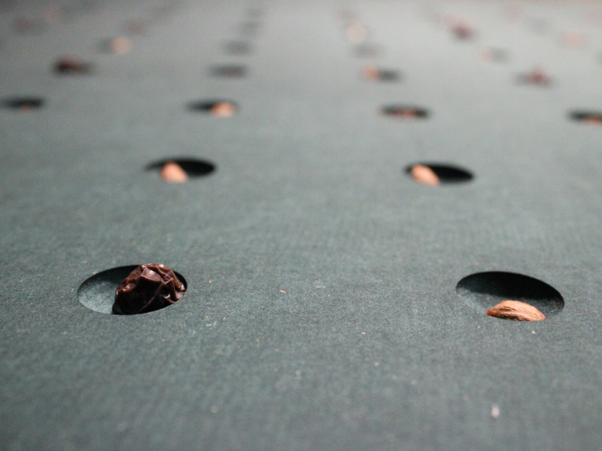
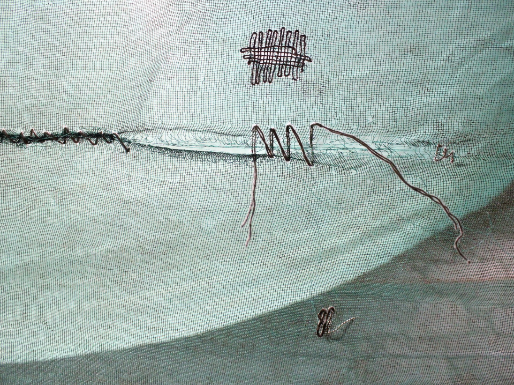

Enlaçar a boca às coisas
A Recoletora – Alexandre Delmar, Maria Ruivo
EXPOSIÇÃO
15.06—17.08.2024
Rua Miraflor, nº 159
Conversa com Maria Ruivo
22 Junho 2024 16:00
(…) se há árvore que enlaça o mundo natural às coisas da cultura e do espírito é esta besta que manda as raízes para as profundezas e agarra-se à terra com a violência de quem exige viver milhares de anos. A pomba de Noé não trouxe à arca uma folha de carvalho. Era assim que o Chicheiro de Lagoa caracterizava os olivais que o pai lhe deixou e que eram mais de três hectares todos dispersos pelas fragas e montes transmontanos. Quem o conhecia dizia que durante a apanha da azeitona, de Novembro a Dezembro, tinha sempre um caroço deste fruto a girar na boca e que o mantinha ali, até ao fim da campanha, como se a semente em movimento no palato lhe impusesse o ritmo para bater nas oliveiras com as varas que lhe serviam de extensão do corpo.” “Enlaçar a boca às coisas” é uma exposição instalativa que reflete sobre a importância cultural e prática da oliveira, a partir da comunidade da aldeia de Lagoa, em Trás-os-Montes.
Através de ferramentas e estratégias, gestos e rituais, narrativas e ficções, a exposição destaca a relação umbilical da oliveira com a história da alimentação e o sofisticado saber fazer corporal que permitiu o constante entrelaçamento entre seres humanos e esta espécie vegetal. Partindo do arquivo de imagens, vídeos e textos de Alexandre Delmar, convida-se à deambulação na instalação e à fruição participada do espectador, que se torna ele próprio matéria na construção do projeto. Esta exposição integra o ciclo “CHÃO, TERRA, PESSOAS” e realiza-se no âmbito do projeto “Em Liberdade” apoiado pela RPAC | Rede Portuguesa de Arte Contemporânea e que envolve para além do MIRA FORUM três estruturas de outras zonas do país: Colégio das Artes (Coimbra), AiR 351 (Cascais) e Lugar do Desenho (Gondomar).
BIOGRAFIA
A Recoletora é a prática comum do artista visual Alexandre Delmar e da designer Maria Ruivo, dedicada ao estudo dos lugares de reciprocidade e interação entre as comunidades humanas e as vegetais. No seu trabalho, a dupla alia uma ação contínua de pesquisa, inventariação e mapeamento das plantas espontâneas comestíveis e medicinais ao resgate de conhecimentos ancestrais e contemporâneos, numa lógica educativa e artística que propõe uma redescoberta da cidade através da recoleção e da deambulação pelos territórios do baldio urbano e da paisagem construída. A Recoletora junta botânicos, nutricionistas, chefs, artistas, herbalistas, arquitetos e designers numa plataforma colaborativa e itinerante, que tem como objetivo trabalhar as temáticas relacionadas com a autonomia alimentar, a recoleção, o herbalismo, os saberes-fazer tradicionais, a oralidade ou a etnobotânica, promovendo ações participativas como cartografias, caminhadas guiadas, workshops, refeições partilhadas, conversas, exposições e publicações. Alexandre Delmar (1982) e Maria Ruivo (1986) colaboram desde 2013, mas é a partir de 2021 que assinam o seu trabalho conjunto sob o nome de A Recoletora.
Desde então, A Recoletora foi convidada a integrar a programação de diversas instituições culturais com projetos de encomenda, dos quais se destaca “Meter o chão à boca” para a Galeria Municipal do Porto (2022), “A comida esquecida” para o CMIA de Viana do Castelo (2022), “Na fronteira da horta, a comida marginal” a convite da curadora Andreia Garcia, para o Fórum da praça do CIAJG em Guimarães (2022), “Verde Adentro: comida bravia nas margens do Neiva”, para o Fórum Internacional de Arte e Comunidade de Esposende (2022), “O lodo ensina a dançar” para o MAM — Mês da Arquitectura da Maia (2023), “A pele vegetal da cidade” para o Museu do Porto (2023-24) e “A emergência da raiz” para a exposição coletiva “Un rastro de furia e algas” em Santiago de Compostela (2023-24). A Recoletora foi vencedora da Bolsa de Criação para a Programação Satélite da Porto Design Biennale (2021) e do Programa de Apoio a Projetos da Direção Geral das Artes com o projeto “Mesa Comum”, que teve lugar em Esposende e contou com a participação da recém-chegada comunidade de refugiados (2023).
A Recoletora
Alexandre Delmar
Maria Ruivo
Arquivo
 


